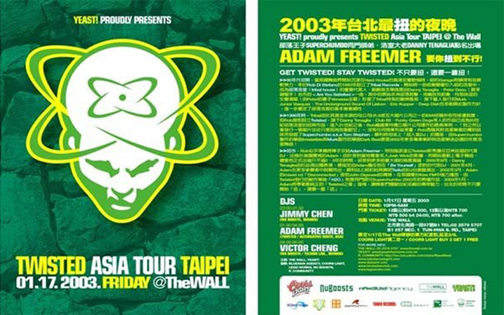

After picking up his first pair of turntables in 1995, and later his first copy of ProTools back in 1998, Adam has gone on to produce chart topping singles and remixes while touring the globe several times over as a DJ. Adam's first big break came in 2000 when Danny Tenaglia chose Adam as a fill in for him at his now infamous “Be Yourself” party in New York. The same year, Adam was chosen from nearly 500 DJ’s from all over the world to play at the now iconic Twilo nightclub in a first of its kind talent scouting DJ contest. Adam later went on to play consistently in New York and his home town of Philadelphia, and from there all over the globe.
Adam’s first major single, H2O, was released on TWISTED records back in 2002. Adam has since gone on to release many chart topping hits including "Underground, Baby!", which achieved top 5 download status on Beatport. On the remix front, with multiple Billboard charting remixes under his belt including two #1 Billboard remixes of the legendary Yoko Ono, and a long list of remixes by respected names such as Danny Tenaglia, DJ Chus, Cevin Fisher, D-Formation and Mistress Barbara, Adam has solidified his standing as a respected dance music producer and remixer. In 2008 Adam started his own label, Mecha Recordings, and besides releasing his own work, released remixes and singles from artists such as Lance DeSardi, D-Formation, DJ Simi and D-Unity. Just recently, Adam remixed the all-time classic house track "Be Yourself", originally produced by Celeda and Danny Tenaglia, which received strong reviews and a firm foothold in the Beatport house music chart.
Adam continues to evolve as a DJ incorporating new sounds into his sets which have their roots in techno, house and soulful deep grooves. Adam’s unique sets include original productions, private remixes, edits and exclusive sounds and samples spanning his production and remix career. As a DJ, Adam has criss crossed North America many times over to play at venues such as Ruby Skye in San Francisco, Rise in Boston and Stereo in Montreal. On a global level, the list continues from all over South America to Europe and throughout Asia.
DJ | Producer | Sound Engineer
- 